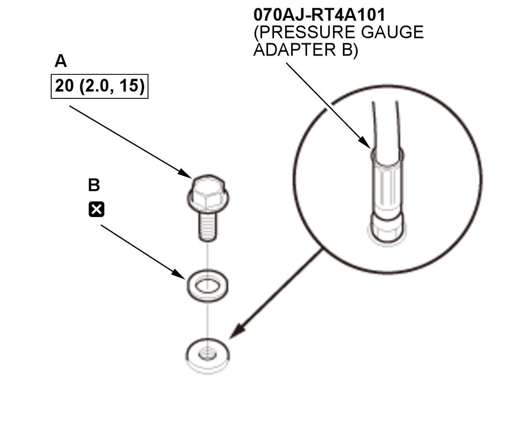

CVT Pressure Test (L15B7/L15BA/L15BY (CVT)): Test
NOTE:
- How to read the torque specifications .
- Check for DTCs. If any DTCs are stored, troubleshoot and clear them first.
- Do not allow dust or other foreign particles to enter the port while installing the A/T oil pressure gauge.
- Be sure to check the transmission fluid level after each pressure port test. When installing or removing the A/T oil pressure gauge, transmission fluid may run out of the pressure inspection ports.
- Do not test pressure for more than 10 seconds at a time.
- Do not move the shift lever while raising the engine speed.
- Disable the VSA by pressing the VSA OFF button.
- VSA DTC(s) may come on during the test-drive. If the VSA DTC(s) come on, clear the DTC(s) after testing is done with the HDS.
- A/T Oil Pressure Gauge - Set
1. When testing the oil pressure at each inspection port, select a suitable adapter from the following table, and connect each adapter to the A/T oil pressure gauge. Inspection port Tool CVT drive pulley pressure Pressure gauge adapter B CVT driven pulley pressure - Pressure gauge adapter A
- Pressure gauge adapter E
Reverse brake pressure Pressure gauge adapter B Inspection port Tool Forward clutch pressure Pressure gauge adapter B - Vehicle - Lift
- Engine Undercover - Remove (Without Engine Undercover Lid)
- Engine Undercover Plate - Remove (With Engine Undercover Lid)
- Engine Undercover Lid - Remove (With Engine Undercover Lid)
- Transmission Fluid Level - Check
- Forward Clutch Pressure - Test
1. Assemble the pressure gauge; install the 2210 mm A/T pressure hose, the A/T pressure adapter, and pressure gauge adapter B to the A/T oil pressure gauge set. 2. Remove the sealing bolt (A) with the sealing washer (B).
Fig 1: Forward Clutch Pressure Inspection Components, Port Sealing Bolt And Sealing Washer With Torque Specifications (L15B7/L15BA/L15BY (CVT)Courtesy of HONDA, U.S.A., INC.3. Install the pressure gauge to the forward clutch pressure inspection port.
4. Start the engine, and warm it up to normal operating temperature (the radiator fan comes on twice).
5. Shift the transmission to D position/mode.
6. Measure the forward clutch pressure at the engine idling while firmly pressing the brake pedal.
Pressure Standard Forward clutch 450-730 kPa (4.59-7.44 kgf/cm2 , 65.3-105.9 psi) 7. Turn the engine off.
8. If the forward clutch pressure is out of the standard, refer to the problem and probable causes listed in the table.
Problem Probable causes No or low forward clutch pressure - Transmission fluid pump defective
- CVT clutch pressure control solenoid valve defective
- Forward clutch defective
- Valve body assembly defective
- Manual valve body defective
9. Remove the pressure gauge.
10. Install the sealing bolt with a new sealing washer to the forward clutch pressure inspection port.
NOTE: Do not reuse the old sealing washer.
- CVT Drive Pulley Pressure - Test
1. Assemble the pressure gauge; install the 2210 mm A/T pressure hose, the A/T pressure adapter, and pressure gauge adapter B to the A/T oil pressure gauge set. 2. Remove the sealing bolt (A) with the sealing washer (B).
Fig 2: CVT Drive Pulley Pressure Inspection Components, Port Sealing Bolt And Sealing Washer With Torque Specifications (L15B7/L15BA/L15BY (CVT)
Courtesy of HONDA, U.S.A., INC.3. Install the pressure gauge to the CVT drive pulley pressure inspection port.
4. Start the engine, and warm it up to normal operating temperature (the radiator fan comes on twice).
5. Shift the transmission to N position/mode.
6. Measure the CVT drive pulley pressure at engine idling while firmly pressing the brake pedal.
Pressure Standard CVT drive pulley 260-540 kPa (2.65-5.51 kgf/cm2 , 37.7-78.3 psi) 7. Turn the engine off.
8. If the CVT drive pulley pressure is out of the standard, refer to the problems and probable causes listed in the table.
Problems Probable causes No or low CVT drive pulley pressure - Transmission fluid pump defective
- CVT drive pulley pressure control solenoid valve defective
- Valve body assembly defective
CVT drive pulley pressure too high - CVT drive pulley pressure control solenoid valve defective
- Valve body assembly defective
9. Remove the pressure gauge.
10. Install the sealing bolt with a new sealing washer to the CVT drive pulley pressure inspection port.
NOTE: Do not reuse the old sealing washer.
- CVT Driven Pulley Pressure - Test
NOTE: - CVT driven pulley pressure may be above 3740 kPa (38.14 kgf/cm2 , 542.4 psi) when there is a transmission problem that causes the TCM to go into fail-safe operation.
- When troubleshooting, you must use the A/T high pressure gauge to measure the CVT driven pulley pressure.
2. Remove the CVT driven pulley pressure sensor (A) .
3. Temporarily install the CVT driven pulley pressure sensor with the sealing washer (B) to pressure gauge adapter A.
4. Assemble the pressure gauge; install the A/T high pressure gauge and the A/T pressure adapter to pressure gauge adapter A.
5. Install pressure gauge adapter E (quick connector) to the CVT driven pulley pressure inspection port.
6. Install the pressure gauge to pressure gauge adapter E (quick connector).
7. Connect the connector (A) to the CVT driven pulley pressure sensor (B).
8. Temporarily install the air cleaner.
9. Start the engine, and warm it up to normal operating temperature (the radiator fan comes on twice).
10. Shift the transmission to N position/mode.
11. Measure the CVT driven pulley pressure at engine idling while firmly pressing the brake pedal.
Pressure Standard CVT driven pulley 490-900 kPa (5.00-9.18 kgf/cm2 , 71.1-130.5 psi) 12. Turn the engine off.
13. If the CVT driven pulley pressure is out of the standard, refer to the problems and probable causes listed in the table.
Problems Probable causes No or low CVT driven pulley pressure - Transmission fluid pump defective
- CVT driven pulley pressure control solenoid valve defective
- Valve body assembly defective
CVT driven pulley pressure too high - CVT driven pulley pressure control solenoid valve defective
- Valve body assembly defective
14. Remove the air cleaner.
15. Disconnect the connector from the CVT driven pulley pressure sensor.
16. Remove the pressure gauge and pressure gauge adapter E (quick connector).
17. Remove the CVT driven pulley pressure sensor.
18. Install the CVT driven pulley pressure sensor .
19. Install the air cleaner .
- Reverse Brake Pressure - Test
1. Assemble the pressure gauge; install the 2210 mm A/T pressure hose, the A/T pressure adapter, and pressure gauge adapter B to the A/T oil pressure gauge set. 2. Remove the air cleaner .
3. Remove the harness cover (A) in front of the reverse brake pressure inspection port (B).4. Remove the sealing bolt (A) with the sealing washer (B).
Fig 3: Reverse Brake Pressure Inspection Components, Port Sealing Bolt And Sealing Washer With Torque Specifications (L15B7/L15BA/L15BY (CVT)Courtesy of HONDA, U.S.A., INC.5. Install the pressure gauge to the reverse brake pressure inspection port.
6. Temporarily install the air cleaner.
7. Start the engine, and warm it up to normal operating temperature (the radiator fan comes on twice).
8. Shift the transmission to R position/mode.
9. Measure the reverse brake pressure at engine idling while firmly pressing the brake pedal.
Pressure Standard Reverse brake 50-440 kpa (0.51-4.49 kgf/cm2 , 7.3-63.8 psi) 10. Turn the engine off.
11. If the reverse brake pressure is out of the standard, refer to the problem and probable causes listed in the table.
Problem Probable causes No or low reverse brake pressure - Transmission fluid pump defective
- CVT clutch pressure control solenoid valve defective
- Reverse brake defective
- Valve body assembly defective
- Manual valve body defective
12. Remove the air cleaner.
13. Remove the pressure gauge.
14. Install the sealing bolt with a new sealing washer to the reverse brake pressure inspection port.
NOTE: Do not reuse the old sealing washer.
15. Install the air cleaner .
- Transmission Fluid Level - Check
- All Removed Parts - Install
1. Install the parts in the reverse order of removal.